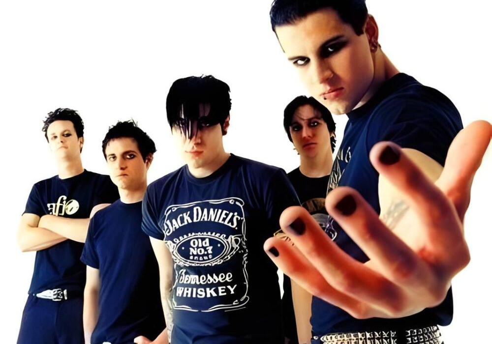
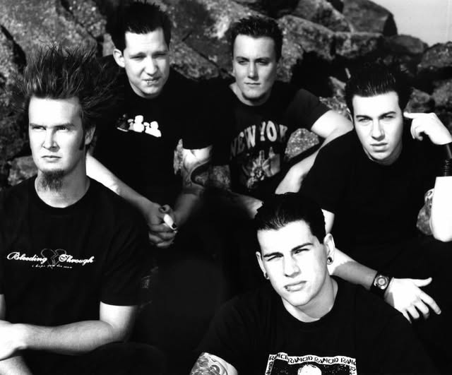

Sobre a Banda

Formaçao e primeiros anos (1999-2003)
O Avenged Sevenfold foi formado em 1999, na cidade de Huntington Beach, Califórnia. A banda surgiu da união de amigos com influências em comum dentro do metal e do punk hardcore, criando inicialmente um som mais pesado e agressivo.
A formação original contava com M. Shadows (vocal), Zacky Vengeance (guitarra), The Rev (bateria) e Matt Wendt (baixo). Pouco tempo depois, Synyster Gates entrou para a banda, trazendo um estilo técnico que se tornaria uma das marcas registradas do grupo.
Em 2001, lançaram seu álbum de estreia, Sounding the Seventh Trumpet, que apresentava fortes influências do metalcore. Em 2003, veio Waking the Fallen, trabalho que mostrou evolução na sonoridade e começou a atrair maior atenção do público e da crítica.

Ascensao e mudança de estilo (2005-2008)
O grande salto na carreira aconteceu com o lançamento de City of Evil (2005). Nesse álbum, a banda abandonou grande parte das influências do metalcore e adotou um som mais voltado ao heavy metal e hard rock, com músicas mais melódicas e técnicas.
Faixas como “Bat Country” ajudaram a consolidar o sucesso da banda internacionalmente. Em 2007, lançaram o álbum homônimo Avenged Sevenfold, que ampliou ainda mais sua popularidade, com músicas como “Afterlife” e “A Little Piece of Heaven”, mostrando versatilidade e criatividade.
Tragedia e renascimento (2009-2013)
Em 2009, a banda sofreu uma perda marcante com a morte de The Rev, que além de baterista era um dos principais compositores do grupo. O acontecimento impactou profundamente a trajetória da banda.
Em 2010, lançaram Nightmare, álbum dedicado a ele. O trabalho foi um sucesso comercial e emocional, refletindo o momento difícil vivido pela banda e marcando uma nova fase em sua carreira.
Nos anos seguintes, o grupo continuou ativo, lançando Hail to the King (2013), que trouxe uma abordagem mais clássica e influenciada pelo heavy metal tradicional.
Evoluçao e experimentaçao (2016-presente)
Em 2016, o Avenged Sevenfold lançou The Stage, um álbum conceitual que explorou temas como inteligência artificial, tecnologia e o futuro da humanidade. Esse trabalho destacou a capacidade da banda de se reinventar e explorar novas ideias musicais.
Em 2023 foi lançado Life is But a Dream... que dividiu opiniões entre os críticos por distoar do estilo já estabelecido da banda.
Com o passar dos anos, o grupo continuou expandindo seus limites criativos, mantendo relevância na cena do rock e do metal. Sua trajetória é marcada não apenas por sucessos comerciais, mas também por constante evolução artística.
Legado
Ao longo de sua carreira, o Avenged Sevenfold se consolidou como uma das bandas mais influentes do metal moderno. Misturando diferentes estilos e explorando novas sonoridades, o grupo construiu uma identidade única, conquistando fãs ao redor do mundo.